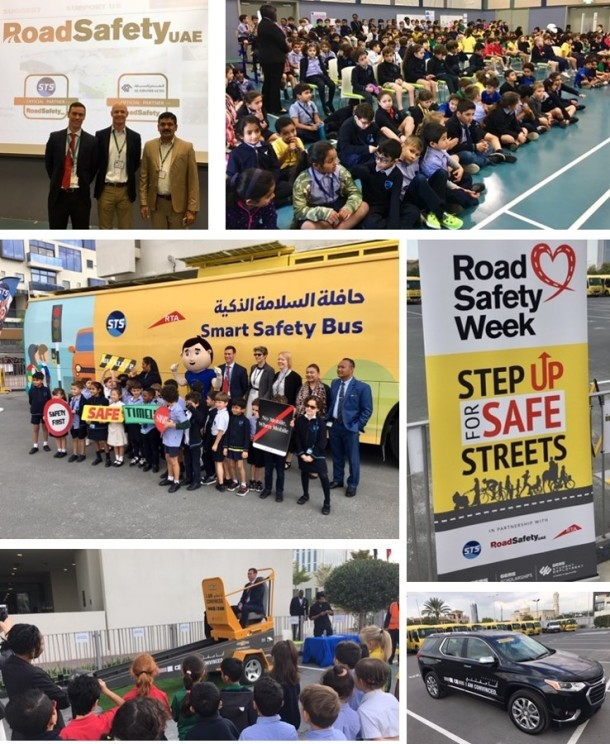

AWARENESS CAMP
In collaboration with Nehru Yuva Kendra and the Motor Vehicle Department, Sacred Heart College’s service
learning students spearheaded an impactful Road Safety Awareness Campaign at Menaka Junction.
The workshop was held with a training bus by the BEJV Project Environment, Safety and Health and
Sustainability & Community Relations teams and covered a variety of topics to raise awareness of road safety
issues.

We need to educate our children about safe behavior – with a focus on using the seat belt, make them aware
of their power to educate their parents, siblings and other passengers, and nurture the ‘next generation’ of
responsible motorists and road users.
Our goals included raising awareness about traffic rules, the importance of wearing helmets and seat
belts, and educating participants on pedestrian safety and the dangers of distracted driving. We partnered
with local traffic department, and emergency services to lend credibility to our event.
At a meeting, conducted as part of the road safety campaign ‘Arrive Alive’, being organised by the City
Police, here on Monday, the Minister said that today’s children would be tomorrow’s motorists who drive
motorcycles and cars and it was better to inculcate road sense among them right from their school days.
Honda Motorcycle and Scooter India recently conducted the National Road Safety Awareness Campaign in
Dhanbad, Jharkhand. As part of this, the main aim was to impart knowledge on the need for road safety. The
event
was for a period of 2 days (30th and 31st May) at the Raja Shiv Prasad College.
PTVA’s English Medium School, Andheri conducted a Road Safety Week in association with the Sahar Traffic
Department, Mumbai Police with an array of programmes aiming to spread awareness among young students about
practicing precautionary measures necessary for commuting safely on roads.